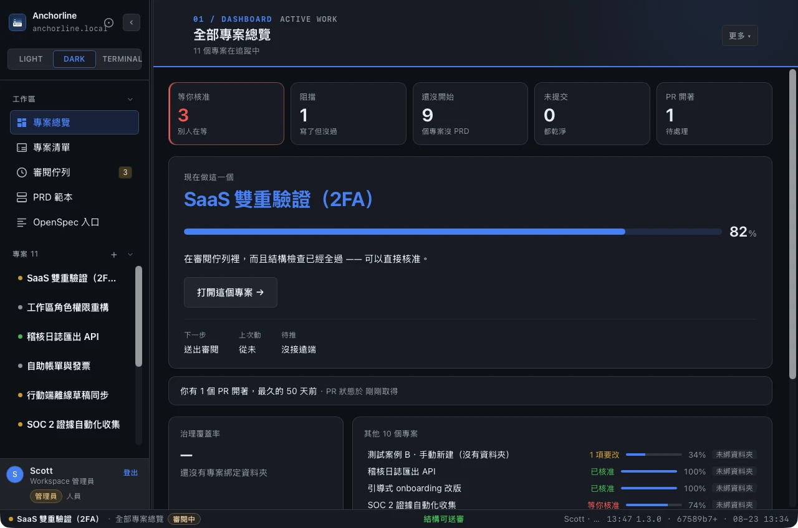
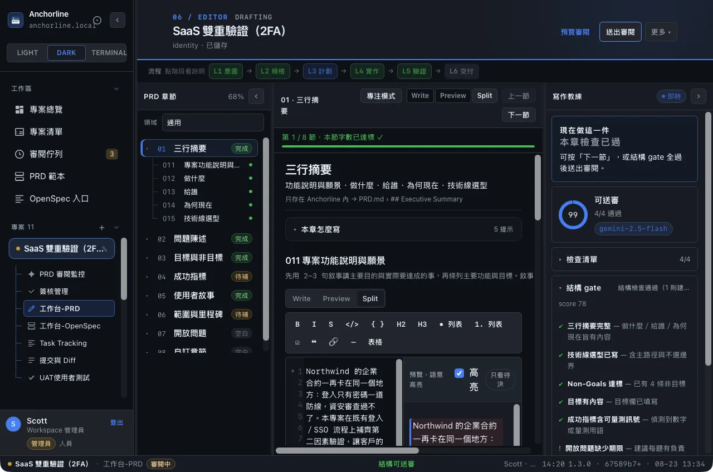
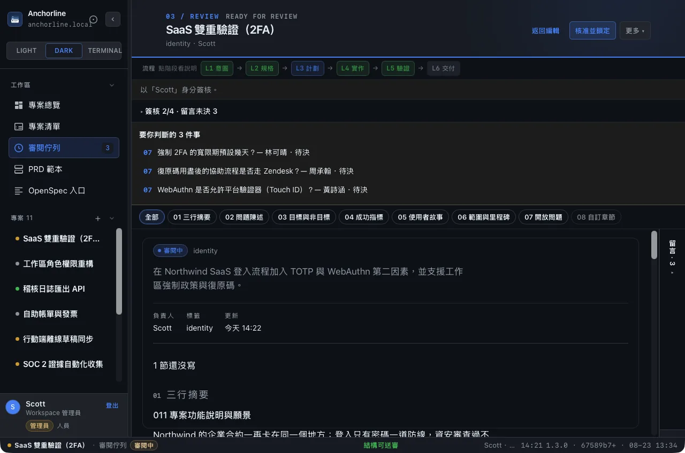
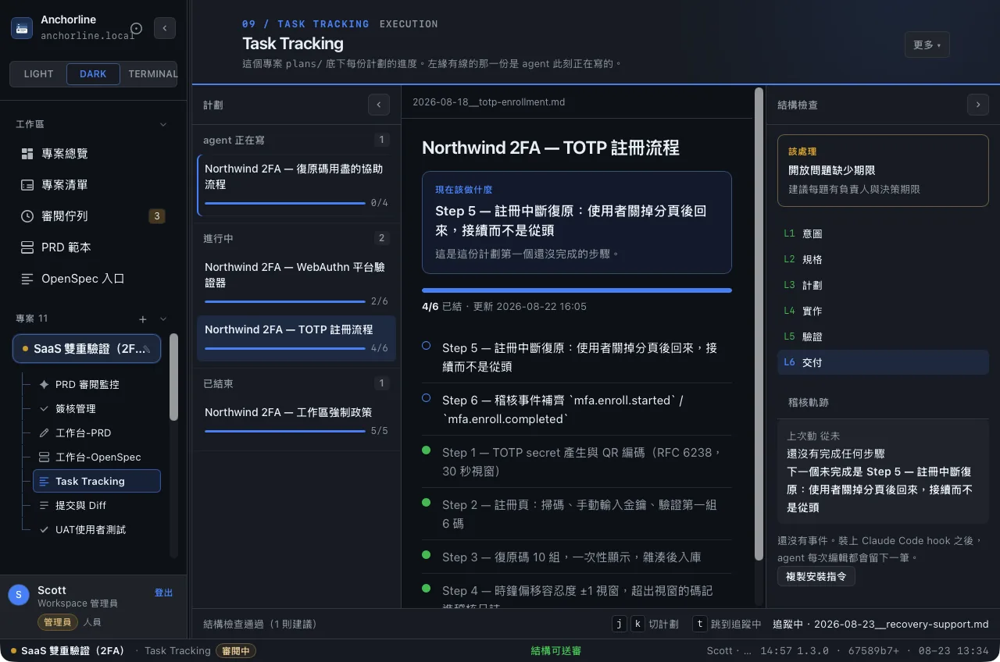
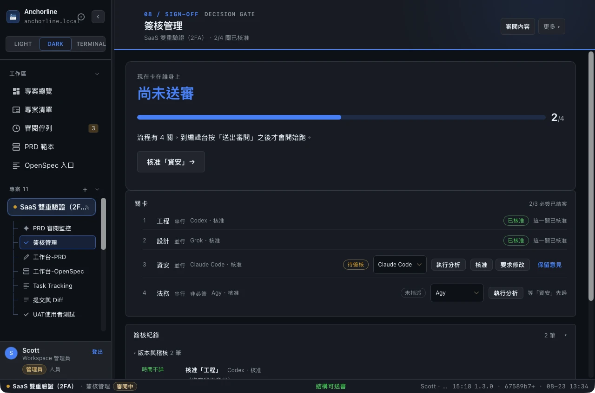

PRD & OpenSpec 具備 AI 撰寫與簽核的工作台
Anchorline 是一條治理鏈，一份落在磁碟上的稽核軌跡。
在審閱佇列裡，而且結構檢查已經全過 —— 可以直接核准。
跑得更多」。
做的事是被治理過的。
四個問題
一個開發專案工作台要回答四個問題。多數工具答得出前兩個。
第一個 ready artifact
openspec artifact 的
加權 rollup
(讀 ISA 的 Decisions / Changelog)
稽核軌跡
Q3 與 Q4 是差異化所在。2026 年 ADR 復甦的理由很直白——
AI agent 現在寫掉大部分程式碼，而看不到「為什麼」的 agent 會很開心地把理由重構掉。
治理鏈：七個關卡，每一個都在磁碟上留下一行
同一份 append-only 的 .anchorline/log/2026-08.jsonl，按月分片，進 git。
change
七行事件認得彼此是同一件事，靠的是同一把 join key。plans/*.md 的 checkbox、git commit、簽核與 openspec change 這四份各有身分的資料，各自帶上同一個穩定錨點——一個工作單元一個，寫下去就不再改動。沒有它，四份資料只能各自顯示，串不成一條線。
同一個 agent 族系撰寫的文件，
不能由同族系核准。
GitHub 的 CODEOWNERS 與 branch protection 只認人，不認 AI 族系，抓不到這一類。
治理鏈 replay 會把違規標出來——一條沒有標示違規的治理鏈沒有說服力。
claude
claude
主要畫面 （五個核心視圖）
點下面的縮圖切換。五張都是實際畫面，不是示意圖。





專案總覽 —— 焦點卡告訴你現在該做哪一個，五格統計說明其餘九個卡在哪裡。
編輯台 —— PRD 逐章引導撰寫，結構檢查即時判定，右邊是 Markdown 即時預覽。
審閱佇列 —— 待審的集中在一處；結構 gate 沒過的，擋在核准之前。
計劃追蹤 —— plans/*.md 的 checkbox 就是進度，右欄三層稽核軌跡跟著一起動。
簽核管理 —— 四道關卡各掛一個 agent，「現在卡在誰身上」寫在最上面。
設計哲學：一次只指一個。
結構 gate
未就緒
完成項目
commit 9c1d2a7
這是刻意的取捨，不是功能不足。理由寫在 src/lib/focus-card.ts 與 src/lib/log-views.ts 的檔頭。
工程證據 （硬數字，不是口號）
其中 40 個是純函式（I/O 全推到呼叫端）
一行都不用改
全部有契約測試
--json——這是一句對上游的相容承諾
安裝 v1.3.0
src-tauri/target/release/bundle/